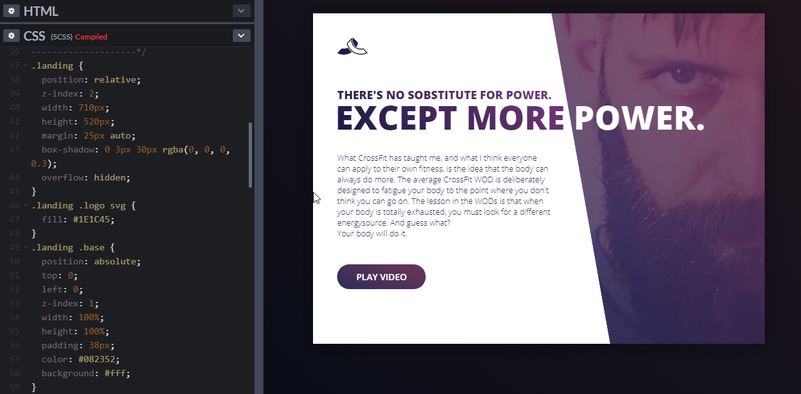
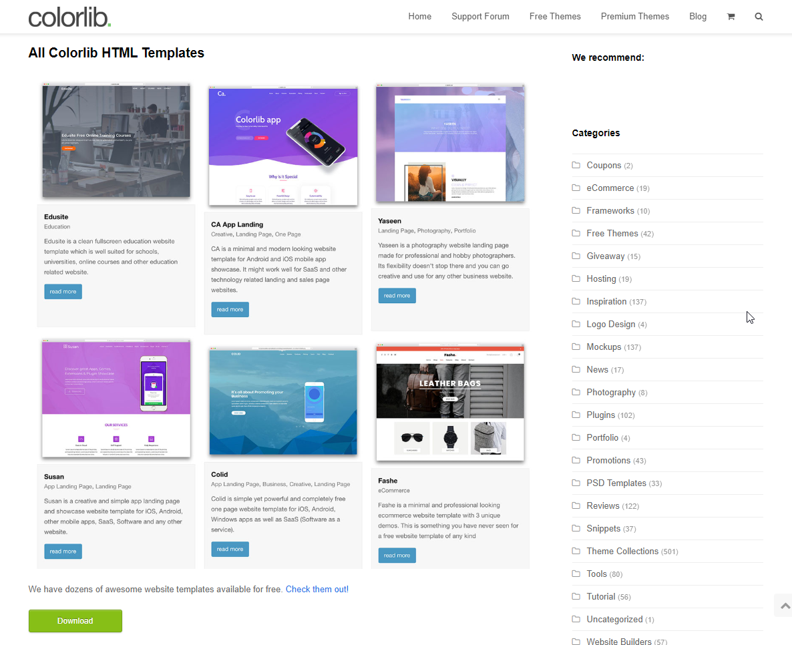
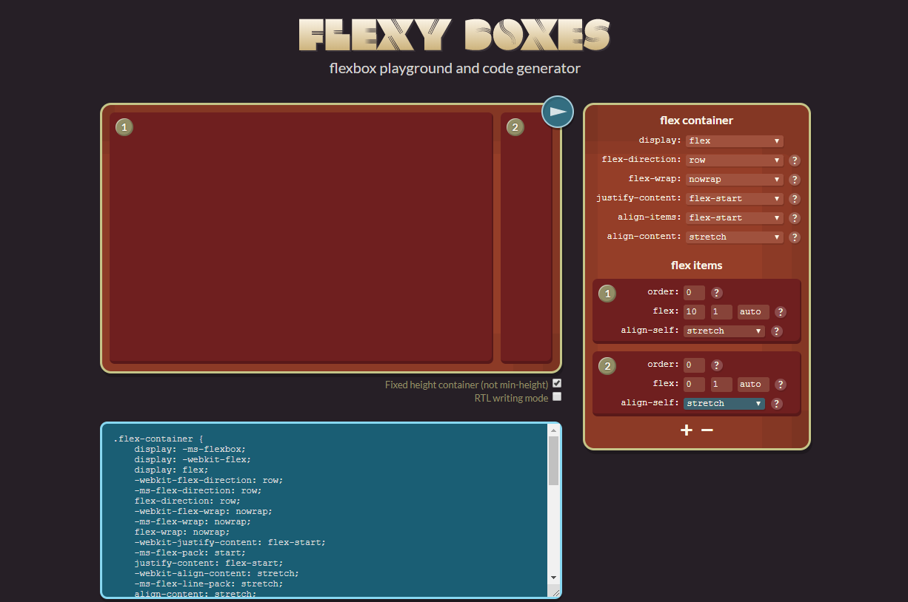
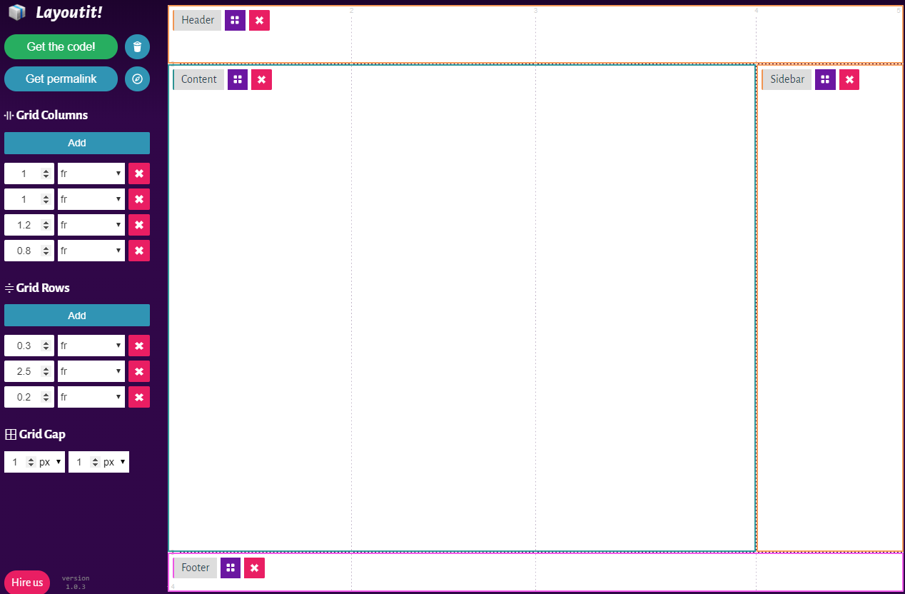
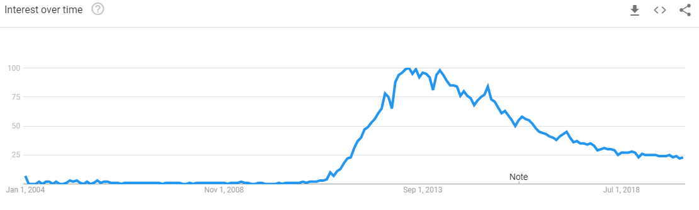

CSS for Everybody
FEB 2020 Presentation
Reminder rocky, open the links first.
Always looking for speakers/vteers
This is the easiest bulletpoint to add to your resume.

How I present
tl;dr: I'm here for 🍕. I know CSS Already. Impress me.
- Code In the Dark
- A bit the history of CSS
- How devs use CSS
- Modern problems that CSS solved
- Learning more advanced CSS

Don't forget the weird dance house music for flavor.👅
WOAH 🍄
CSS is...
CSS is a styling language, so its building blocks are different from the classical programming languages.
http://amyhissom.com/HTML5-CSS3/history.html
https://css-tricks.com/look-back-history-css/
https://www.w3.org/Style/CSS20/history.html
https://crossbrowsertesting.com/blog/test-automation/history-of-web-browsers/
CSS history's cast of characters


Enough History.
Modern CSS uses. Heavily Opinionated.
Write it naturally.
"Borrow" ideas.

Get it from a designer.
Grab a pre-built html template
Make your life easier with...
GENERATORS 🤖

🌟https://the-echoplex.net/flexyboxes/🌟
🌟https://grid.layoutit.com/🌟

Is that it with CSS?
But wait -- what happened in the late 2000s?


Responsive Design
@media only screen and (max-width: 600px){
body {
background-color: lightblue;
}
}Responsive Design Trends
But wait -- my CSS file is getting confusing.


CSS preprocessors are scripting languages that extend the default capabilities of CSS. They offer:
- Nesting
- mixins
- Functions
- conditionals
- loops
- variables
- calcs and imports
- imports
CSS preprocessors are scripting languages that extend the default capabilities of CSS. They offer:
- Nesting
- mixins
- Functions
- conditionals
- loops
- variables
- calcs
- imports
CSS preprocessors are scripting languages that extend the default capabilities of CSS. They offer:
- Nesting
- mixins
- Functions
- conditionals
- loops
- variables
- calcs and imports
- imports
But wait -- responsive design, containers, etc...?
If every site is the same, why are we reinventing the wheel?
You don't have to!
Krunal: Then maybe get good!